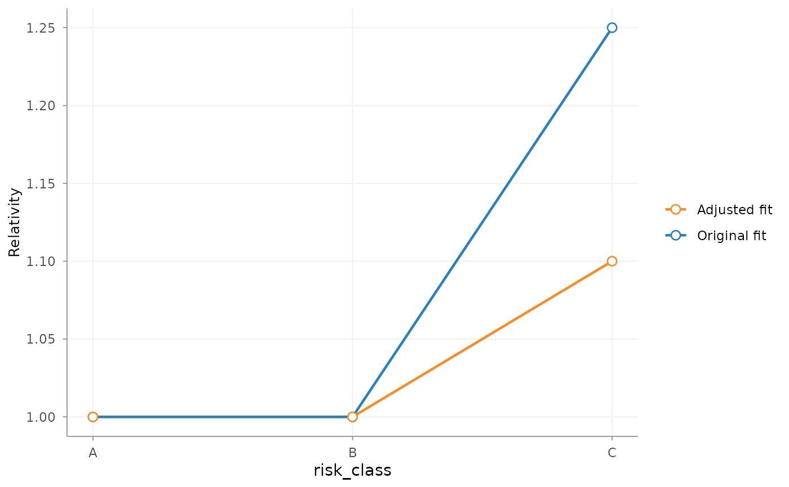

Visualise one stored step of a rating_refinement specification before
fitting the revised GLM with refit(). The plot compares the original
fitted tariff effect with the smoothing, restriction, shrinkage, rebasing or
sublevel relativity specification produced by the selected step.
Usage
# S3 method for class 'rating_refinement'
autoplot(
object,
variable = NULL,
step = NULL,
x_max = NULL,
y_max = NULL,
show_initial_smoothing = FALSE,
show_segments = TRUE,
remove_underscores = FALSE,
rotate_angle = NULL,
custom_theme = NULL,
...
)Arguments
- object
Object of class
rating_refinement.- variable
Optional character string identifying the model or derived variable whose refinement step should be shown. For one smoothing lineage, the most recent smoothing or edit step is selected. An error is returned when no step matches or when matches belong to different refinements.
- step
Optional positive integer identifying a step in the stored refinement sequence. This takes precedence over
variable.- x_max
Optional single finite numeric value. Maximum value displayed on the x-axis of a smoothing plot. This changes only the visible plotting range; it does not remove observations, alter the fitted smoothing curve or affect
refit(). It is useful when a small number of extreme values would otherwise compress the range containing most portfolio risks. For example, usex_max = 1e7to display insured values up to 10 million. This argument is only available for smoothing steps.- y_max
Optional single finite numeric value. Maximum relativity displayed on the y-axis of a smoothing plot. Like
x_max, this changes only the visible plotting range and does not alter the smoothing fit, refinement data orrefit(). This argument is only available for smoothing steps.- show_initial_smoothing
Logical. For a smoothing or smoothing-edit plot, whether to overlay the initial curve produced by the corresponding
add_smoothing()step. The other smoothing line shows the cumulative curve at the selectedstep. Default isFALSE. This argument does not alter the refinement specification orrefit().- show_segments
Logical. For a smoothing or smoothing-edit relativity plot, whether to show the horizontal relativities and boundary points of the new tariff segments. Set this to
FALSEto inspect the continuous smoothing curve without the segmented tariff representation. The original fitted model effects remain visible. Default isTRUE.- remove_underscores
Logical; if
TRUE, underscores are replaced by spaces in the x-axis label. Default isFALSE.- rotate_angle
Optional numeric value for the angle of x-axis labels.
- custom_theme
Optional list passed to
ggplot2::theme().- ...
Additional plotting arguments passed to ggplot2 geoms.
Details
Refinement steps are evaluated in their stored order up to and including the selected step. The plot is a diagnostic preview: it does not refit the GLM and does not modify the refinement specification.
If step is supplied, that position in the refinement sequence is shown. If
only variable is supplied, the most recent step in one smoothing lineage
is used. For other refinement types, exactly one stored step must match that
variable. When neither is supplied, the object must contain exactly one
refinement step. Otherwise the function asks the user to select a step
explicitly.
Each edit_smoothing() call is stored as a separate workflow step. Selecting
such a step shows the cumulative smoothing after all preceding edits up to
that point. Set show_initial_smoothing = TRUE to add the curve produced by
the corresponding add_smoothing() step before any edits were applied.
Actuarial interpretation
The plot supports review of the proposed tariff structure before estimation. It can be used to assess the local shape and magnitude of a smoothing curve, the effect of fixed relativities, and the differentiation introduced within a broader GLM level. This visual assessment does not by itself establish statistical adequacy; claim volume, exposure, stability over time and model diagnostics should also be considered.
For a sublevel split created by add_relativities(), the original parent
level is shown as a horizontal segment across its child levels. This makes
the parent GLM effect and the proposed within-level differentiation directly
comparable.
Examples
portfolio <- data.frame(
claims = c(1, 2, 1, 3, 2, 4),
exposure = rep(1, 6),
risk_class = factor(c("A", "B", "C", "A", "B", "C"))
)
model <- glm(
claims ~ risk_class + offset(log(exposure)),
family = poisson(),
data = portfolio
)
refinement <- prepare_refinement(model, data = portfolio) |>
add_restriction(data.frame(
risk_class = "C",
risk_class_restricted = 1.10
))
autoplot(refinement)
